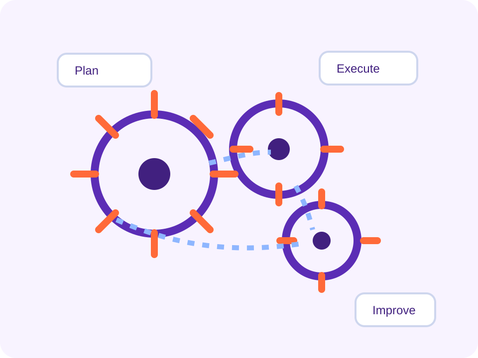

End-to-end Processes
Review manufacturing value streams and handoffs.
404
Use the links below to return to the Manufacturing Community of Practice landing page or jump straight to one of the main sections.

Review manufacturing value streams and handoffs.
See the functions required to support planning and execution.
Tailor the conversation to sector-specific needs.